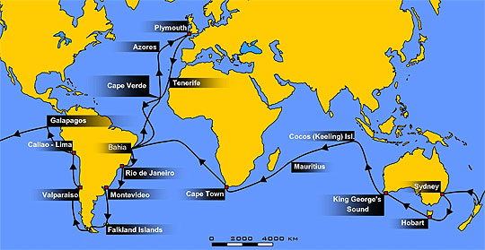

Quien Es Charles Darwin
Charles Robert Darwin (Shrewsbury, 12 de febrero de 1809-Down House, 19 de abril de 1882), comúnmente conocido como Charles Darwin, también llamado Carlos Darwin en parte del ámbito hispano, fue un naturalista inglés, reconocido por ser el científico más influyente (y el primero, compartiendo este logro de forma independiente con Alfred Russel Wallace) de los que plantearon la idea de la evolución biológica a través de la selección natural, justificándola en su obra El origen de las especies (1859) con numerosos ejemplos extraídos de la observación de la naturaleza.
Biografía
Charles Robert Darwin nació en Sherewsbury el 12 de febrero de 1809. Fue el segundo hijo varón de Robert Waring Darwin, médico de fama en la localidad, y de Susannah Wedgwood, hija de un célebre ceramista del Staffordshire, Josiah Wedgwood, promotor de la construcción de un canal para unir la región con las costas y miembro de la Royal Society.
Expedición
La expedición del Beagle
El 27 de diciembre de 1831 el Beagle zarpó de Davenport con Darwin a bordo, dispuesto a comenzar la que él llamó su «segunda vida» tras dos meses de desalentadora espera en Plymouth, mientras la nave era reparada de los desperfectos ocasionados en su viaje anterior, y después de que la galerna frustrara dos intentos de partida. Durante ese tiempo, Darwin experimentó «palpitaciones y dolores en el corazón» de origen más que probablemente nervioso, como quizá también lo habrían de ser más tarde sus frecuentes postraciones. Sin saberlo, Darwin había corrido el riesgo de ser rechazado por Robert Fitzroy, ya que el capitán, convencido seguidor de las teorías fisiognómicas del sacerdote suizo Johann Caspar Lavater, estimó en un principio que la nariz del naturalista no revelaba la energía y determinación suficientes para la empresa.
Los frutos de un viaje
Darwin regresó a Inglaterra el 2 de octubre de 1836; el cambio experimentado en esos años debió de ser tan notable que su padre, «el más agudo observador que se haya visto, de natural escéptico y que estaba lejos de creer en la frenología», dictaminó al volverlo a ver que la forma de su cabeza había cambiado por completo. También su salud se había alterado; hacia el final del viaje se mareaba con más facilidad que en sus comienzos, y en el otoño de 1834 había estado enfermo durante un mes. Se ha especulado con la posibilidad de que, en marzo de 1835, contrajera una infección latente de la llamada enfermedad de Chagas como consecuencia de la picadura de un insecto.
Teoria de la evolución
A comienzos de 1856, Charles Lyell aconsejó a Darwin que trabajara en el completo desarrollo de sus ideas acerca de la evolución de las especies. Darwin emprendió entonces la redacción de una obra que, aun estando concebida a una escala tres o cuatro veces superior de la que luego había de ser la del texto efectivamente publicado, representaba, en su opinión, un mero resumen del material recogido al respecto.